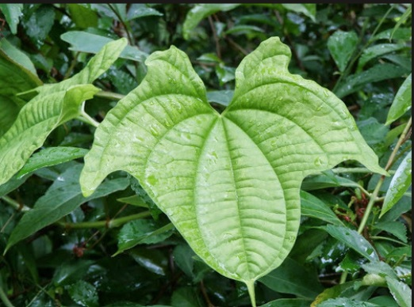
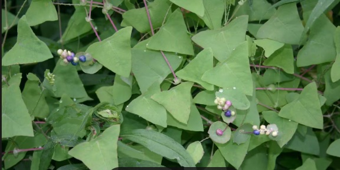
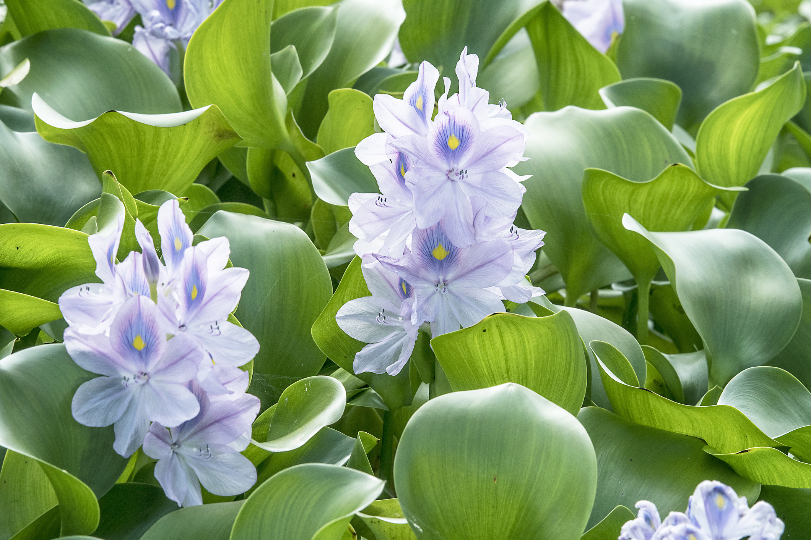
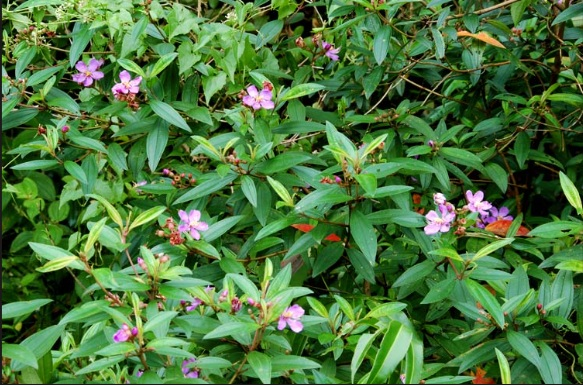
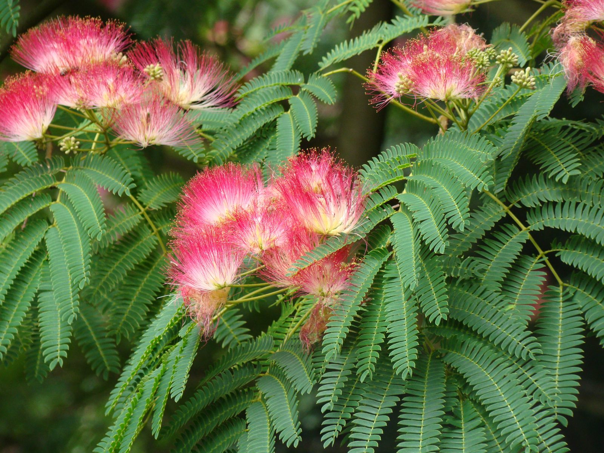
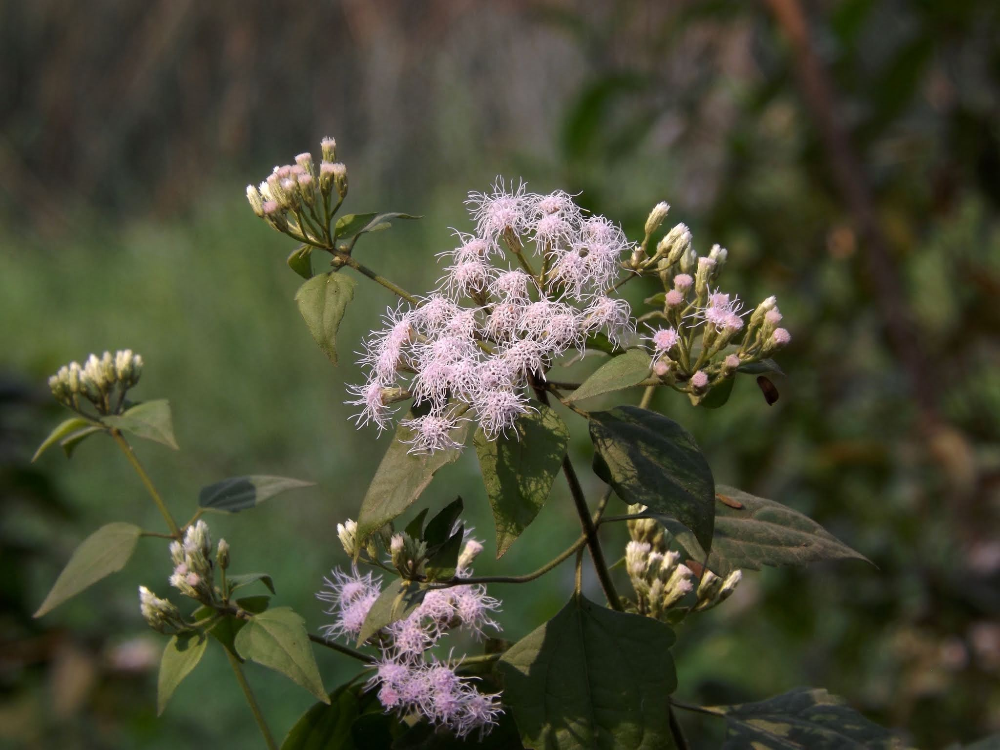
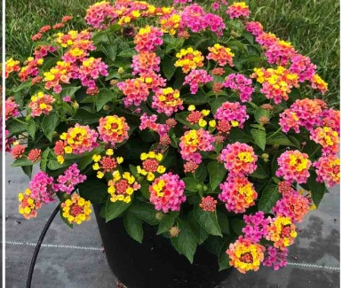
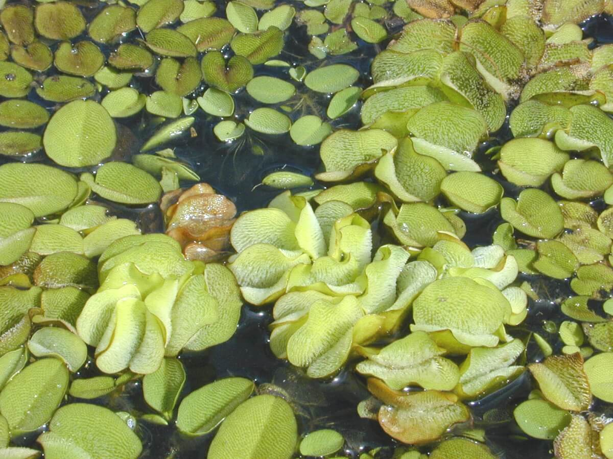

Right now, invasive plants are silently taking over Bukit Timah, the Southern Ridges,
and your neighbourhood park. The good news? You can stop them.
400+Invasive Species
40%Biodiversity Lost
$50M+Annual Control Cost
🌏
🌿
🍃
🌱
🍂
WHY YOU SHOULD CARE
This Is Your Singapore to Protect 🇸🇬
Six reasons every Singapore student needs to know about invasive plants
🏫
Your Parks Are Under Threat
Invasive plants are already in Bishan, Pasir Ris, and East Coast Park. Without action, Singapore's green spaces will be transformed within decades.
💼
Real Career Opportunities
Singapore's City in Nature vision is creating thousands of conservation and ecology jobs. This knowledge is your competitive edge.
🌡️
Invasives Make Heat Worse
Native trees cool Singapore's urban heat island. Invasives replace them with species that trap heat — making our island even hotter.
🦎
Your Wildlife Needs You
Otters, hornbills, mousedeer — all depend on native plants. When invasives dominate, these animals lose their food and homes.
🏆
Be the Fix-It Generation
Previous generations introduced these plants by accident. Your generation gets to be the one that solved it.
📱
Citizen Science Is Real Science
NParks and NUS researchers use student data from iNaturalist to track invasives. Your sightings count as real scientific observations.
"
Singapore has lost over 40% of its original biodiversity. But we still have Bukit Timah — one of the most biodiverse patches of rainforest on Earth. It's worth fighting for.
400+Invasive Plant Species in Singapore
163km²Of Singapore's Nature At Risk
40%Of Original Biodiversity Already Lost
$50M+Spent Annually on Invasive Control
THE BASICS
What Is an Invasive Plant?
🌍
Not From Here
Invasive plants are species introduced — accidentally or on purpose — to places outside their native home. In Singapore, many arrived via trade ships or as ornamentals.
⚡
Spreads Fast
Without natural predators or diseases from their home country, they spread unchecked — sometimes doubling coverage in just two weeks.
💀
Smothers Native Life
They steal sunlight, water, and nutrients from native plants — cascading into habitat loss for Singapore's wildlife like otters and hornbills.
🔥
Hard to Remove
Once established, invasive plants cost enormous time, money, and effort to remove. Prevention and early action are everything.
MEET THE INVADERS
Singapore's Most Wanted 🕵️
Click any card to see the full profile

EXTREME
Zanzibar Yam
Smothers trees with bulbil-spreading vines

EXTREME
Mile-a-Minute
Singapore's #1 weed — 8cm growth per day

HIGH
Water Hyacinth
Chokes Singapore's waterways and reservoirs

HIGH
Senduduk Bulu
Invades even healthy forest understorey

HIGH
Albizia
Fast-growing widow-maker tree
➕
See All 8 Species
Full profiles with photos
PLAY AND LEARN
5 Games. Real Knowledge. 🎮
❓
SG Quiz12 Singapore-specific questions
🃏
Memory MatchColour-coded plant matching
🎯
Spot the InvaderNative vs Invasive with photos
🏃
Plant Defender Runner2D endless runner game — NEW!
🗺️
Spread SimulatorWatch invasions unfold over 30 years
🧑
🌿
🎋
⭐
Plant Defender Runner — NEW!
YOU CAN HELP
3 Things Singapore Students Can Do Right Now
01
📱
Report on iNaturalist SG
Download iNaturalist and log invasive plants near you. NParks and NUS researchers use this data directly to track and manage invasives.
02
🤝
Join NParks Volunteer Days
NParks runs invasive plant removal sessions at Bukit Timah and Central Catchment Nature Reserve. Open to students and families!
03
🚫
Never Dump Garden Plants
Never release aquarium or garden plants into waterways or green spaces. This is one of the top ways invasives spread in Singapore.
An invasive plant is a species that is non-native to an ecosystem and whose introduction causes harm to the environment, economy, or human health.
Not every foreign plant is invasive. A plant becomes truly invasive when it:
Establishes and reproduces successfully in a new environment
Spreads rapidly without human help
Outcompetes native species for sunlight, water, and nutrients
Disrupts native ecosystems and the animals that depend on them
In Singapore, over 400 non-native plant species have been recorded. Many arrived via centuries of global trade, colonial-era planting, and the aquarium and gardening trades.
Native vs Invasive — Singapore Example
🌸 Tembusu Tree
NATIVE
On Singapore's $5 note
Supports 50+ animals
Evolved here over millennia
Has natural pest controls
Grows in natural balance
🌿 Zanzibar Yam
INVASIVE
Introduced from Africa
No local natural enemies
Smothers trees rapidly
Spreads via buried bulbils
Disrupts entire forest
🧬
Enemy Release Effect
In Africa, the Zanzibar Yam is controlled by insects and fungi. In Singapore, none of these exist — so it grows explosively with nothing to stop it.
🚢
Singapore's Port Problem
As the world's second-busiest port, Singapore receives cargo from 600+ ports. Seeds arrive constantly hidden in soil, packaging, and fresh produce.
🌡️
Climate Change Amplifier
Rising temperatures create even more favourable conditions for tropical invasives to establish and spread through Singapore's parks year-round.
How Invasives Spread in Singapore
Singapore's unique geography creates specific pathways for invasives to enter and spread:
🚢
Shipping and Trade
Singapore handles 37 million containers per year — each a potential vector. Seeds hidden in soil, packaging, or produce slip through constantly.
🌊
Waterways and Drains
Singapore's canal network connects nature reserves to the coast. Water Hyacinth spreads rapidly through our drainage systems into reservoirs.
🐦
Birds and Wildlife
Invasive Javan Mynas eat Senduduk Bulu berries and deposit seeds throughout nature reserves — two invasives helping each other, an "invasion meltdown".
🏡
Irresponsible Gardening
Aquarium plants dumped into canals and ornamentals thrown at forest edges are major problems. Never release garden plants into the wild!
🏗️
Construction Sites
Singapore's constant construction moves soil — and the seeds and rhizomes within it — to new locations where invasives thrive in disturbed ground.
🌱
Bulbils and Rhizomes
The Zanzibar Yam drops bulbils that remain dormant in soil for years, sprouting when conditions are right. Even tiny fragments regrow into full plants.
How One Plant Becomes a Crisis 📈
Year 1
Single plant. Unnoticed.
Year 3
Dozens of plants. Spreading quietly.
Year 7
Hundreds of plants. Natives declining.
Year 15
Entire habitat invaded. Very costly to reverse.
Singapore's Most Threatened Habitats
Singapore has some of South-East Asia's most precious ecosystems — all under threat from invasive plants:
🌳
Bukit Timah Forest
One of the world's most biodiverse urban forests. Mile-a-Minute and Zanzibar Yam invade its edges, threatening species found nowhere else on Earth.
⚠️ Mile-a-Minute, Zanzibar Yam
🌊
Reservoirs and Waterways
Water Hyacinth mats reduce water quality, block sunlight, and clog pumping systems supplying Singapore's drinking water directly.
⚠️ Water Hyacinth, Salvinia
🌿
Sungei Buloh Mangroves
Critical nurseries for fish and resting spots for migratory birds. Invasive grasses and vines are fragmenting these irreplaceable coastal habitats.
⚠️ Casuarina, Para Grass
🏝️
Pulau Ubin
Singapore's biodiversity refuge. Invasives are filling gaps left by abandoned farmland — outcompeting returning native species before they can establish.
⚠️ Siam Weed, Lantana
🌾
Wasteland and Grasslands
Open areas between urban and forest zones are invasion hotspots. Invasive grasses establish here first, then creep into adjacent forests.
⚠️ Siam Weed, Cogon Grass
🦅
Southern Ridges
This green corridor from Labrador to Mount Faber faces constant invasion pressure from urban-adapted plants spreading from surrounding housing estates.
⚠️ Senduduk Bulu, Albizia
The Real Damage in Singapore 💀
The impact goes far beyond just looking untidy. Here is what is really at stake:
🌿 Ecological Damage
Biodiversity collapse — Invasives replace diverse plant communities with single-species monocultures
Food web disruption — Native insects, birds, and mammals depend on specific native plants that invasives displace
Soil chemistry changes — Some invasives alter soil pH and nutrients, preventing native plant recovery even after removal
Light competition — Mile-a-Minute grows over forest canopy, starving trees of sunlight until they die within months
Long-term seed banks — Invasive bulbils and seeds persist in soil for years, blocking native seedling establishment
💰 Economic Damage
Water supply costs — Water Hyacinth requires expensive mechanical treatment in Singapore's reservoirs
Toxic plants — Some invasives in Singapore are toxic to children and pets if touched or ingested
Water quality — Aquatic invasives enable bacteria and toxin-producing algae to bloom in reservoirs
Heat amplification — Invasives replacing native tree canopy worsen Singapore's already serious urban heat island
🔦 Spotlight: What Mile-a-Minute Does to Bukit Timah
Growing up to 8cm per day, Mikania micrantha drapes over shrubs and trees like a thick green blanket, cutting off all light. Trees weaken and collapse. The seedbank fills with Mikania seeds. Native undergrowth vanishes entirely. Recovering a heavily invaded patch can take 10 to 20 years of active management — or it may never recover at all.
How Singapore Fights Back 🛡️
Singapore uses integrated approaches combining government action with community involvement:
✋
Manual Removal
NParks Standard
NParks staff and volunteers physically uproot invasives. Must remove all roots — even small Zanzibar Yam fragments can regrow into full plants.
🧪
Targeted Herbicides
Specialist Use
Foliar sprays or stem injection. Used carefully to minimise impact on native plants. Never applied near waterways without special protocols.
🌱
Native Replanting
Critical Step
After removal, NParks replants native species to close the gap before invasives return. Volunteer planting events make a real difference!
🔬
Research and Monitoring
NUS + NParks
GPS mapping and citizen science data from iNaturalist. Early detection data saves enormous costs in management later.
📋
Biosecurity at Borders
AVA Regulated
AVA maintains a list of prohibited plants. All plant imports must be declared and inspected at Singapore's borders before entry.
🏫
Education
Most Sustainable!
Long-term success depends on a public that understands invasive plants. That is why you learning this matters so much right now.
💡
Singapore tip: If you see Water Hyacinth in a canal, report to PUB's 24-hour hotline: 1800-284-6600. For other invasives, use NParks' feedback portal or call 1800-471-7300.
Ready to Test Your Knowledge? 🧠
Try our Singapore quiz, runner game, and more!
SINGAPORE ROGUES GALLERY
Singapore's Invasive Species 🔍
Eight invasive plants causing real damage right here. Click any card for the full profile.
Filter:
EXTREME
Zanzibar Yam
Dioscorea bulbifera
"The Bulb Bomber"
📍 Africa and Asia🌍 Island-wide📏 Up to 5m long
🏞️ Habitat in Singapore
Forest edges, secondary forests, roadsides across Singapore. Particularly aggressive at Bukit Timah, Central Catchment, and Pulau Ubin. Thrives in our year-round warmth and humidity.
💀 How It Kills
Twines aggressively around native shrubs and trees, creating a dense canopy that blocks all sunlight — smothering whatever is underneath. Produces bulbils that drop to the ground and spread via soil disturbance.
📡 How It Spreads
Bulbils drop from the vine and are moved by water flow, soil disturbance during construction, and animals. Even small tuber fragments left in soil can regenerate a full plant.
🛡️ How NParks Removes It
Manual uprooting — must remove all bulbils from soil
Repeated cutting over multiple seasons to exhaust roots
Herbicide stem injection for established plants
Monitor for regrowth for at least 2 years after clearing
🤯 Wild fact: The Zanzibar Yam was likely introduced as a food crop during colonial times. Now it is one of Singapore's most problematic invasives.
EXTREME
Mile-a-Minute
Mikania micrantha
"Singapore's Number One Weed"
📍 C. and S. America🌍 Island-wide📏 8cm per day
🏞️ Habitat in Singapore
Roadsides, forest edges, degraded forest, and wasteland across Singapore. The single most widespread invasive plant in Singapore according to NParks. Found in virtually every nature area.
💀 How It Kills
Grows up to 8cm per day in Singapore's tropical climate. Climbs over and smothers all vegetation beneath it, forming a continuous canopy that blocks all light. Affected trees die within months.
📡 How It Spreads
Wind dispersal of lightweight seeds is the primary mechanism. Seeds travel from construction sites and roadsides into adjacent forest. Stem fragments also root easily in Singapore's moist soil.
🛡️ How NParks Removes It
Manual cutting before seed set — top priority action
Repeated weekly cutting during the growing season
Herbicide spraying on established infestations
Competitive planting of fast-growing native species to shade it out
🤯 Wild fact: Introduced via contaminated grass seed in the 1960s — a single preventable mistake that created decades of ongoing management costs and irreversible forest damage.
HIGH
Water Hyacinth
Eichhornia crassipes
"The Waterway Choker"
📍 South America🌍 Canals, reservoirs📏 Doubles in 2 weeks
🏞️ Habitat in Singapore
Found in Singapore's reservoirs, canals, and slow-moving waterways. Common in Kranji Reservoir and various urban canals. Spreads rapidly after heavy rains wash it between water bodies.
💀 How It Kills
Thick floating mats block sunlight — aquatic plants die and fish suffocate as oxygen drops. Creates ideal breeding grounds for Aedes mosquitoes, directly increasing Singapore's dengue risk.
📡 How It Spreads
Doubles coverage in just 2 weeks through vegetative reproduction. Flood events wash mats through Singapore's canal network. Also introduced when people dump aquarium plants into waterways.
🛡️ How PUB and NParks Remove It
Mechanical harvesting using specialist boats on larger water bodies
Manual removal using nets and rakes in canals
Report to PUB at 1800-284-6600
NEVER dump aquarium plants into Singapore's waterways
🤯 Wild fact: Introduced as an ornamental pond plant because of its beautiful purple flowers — now one of Singapore's costliest aquatic invasives to manage.
HIGH
Senduduk Bulu
Clidemia hirta
"The Forest Floor Killer"
📍 Tropical Americas🌍 Forest understorey🍇 8,000 seeds per plant
🏞️ Habitat in Singapore
A serious understorey invader in Singapore's secondary forests including Bukit Timah and Central Catchment. It tolerates shade — meaning it can invade intact forest, not just disturbed edges.
💀 How It Kills
Forms dense thickets preventing native seedlings from establishing. Breaks the regeneration cycle of native forest — once it takes over the understorey, the forest cannot replace its canopy trees naturally.
📡 How It Spreads
Thousands of berries eaten by the invasive Javan Myna, dispersed throughout forest fragments. This bird-plant invasive partnership is called an "invasion meltdown" by researchers.
🛡️ How NParks Removes It
Manual uprooting — most effective when plants are young
Cut-stump herbicide treatment for established shrubs
Long-term monitoring — seeds persist in soil for years
Replant native understorey species after clearing to fill the gap
🤯 Wild fact: Senduduk Bulu is partly powered by the Javan Myna — itself an invasive species. Two invasives helping each other is called an invasion meltdown!

HIGH
Siam Weed
Chromolaena odorata
"The Sunlight Thief"
📍 C. and S. America🌍 Wasteland, edges📏 3m per season
🏞️ Habitat in Singapore
Roadsides, wasteland, forest edges, and abandoned farmland — especially prevalent on Pulau Ubin and along Singapore's rail corridor. Highly adaptable and drought-tolerant.
💀 How It Kills
Grows up to 3 metres tall in a single growing season, shading out all native plants below. Releases allelopathic chemicals inhibiting surrounding plants. Forms nearly impenetrable monocultures.
📡 How It Spreads
Wind-dispersed seeds in large quantities. Thrives especially in disturbed soil after construction — making Singapore's constant development a major driver of its spread across the island.
🛡️ How NParks Removes It
Cutting before seed set is critical — prevents the next generation
Herbicide treatment on cut stumps to prevent regrowth
Replanting with fast-growing native pioneer species for competition
Community volunteer cutting events run regularly on Pulau Ubin
🤯 Wild fact: Siam Weed is highly flammable when dry. A single discarded cigarette in a Siam Weed patch could start a devastating fire in Singapore's otherwise fire-free forests.
HIGH
Albizia
Falcataria moluccana
"The Widow-Maker Tree"
📍 Maluku, Indonesia🌍 Parks, forests📏 Grows 7m per year
🏞️ Habitat in Singapore
Extremely common across Singapore in secondary forests and parks. Deliberately planted for shade in the past — before its invasive and structurally dangerous nature was fully understood by planners.
💀 How It Kills
Up to 7m per year growth produces structurally weak wood that breaks catastrophically in storms. Dense canopy shades out native forest regeneration completely below it.
📡 How It Spreads
Wind and water-dispersed seeds in enormous quantities. Nitrogen-fixing roots give it an advantage in poor soils, allowing it to outcompete native trees that need better conditions to establish.
🛡️ How NParks Removes It
Ring-barking for large specimens to prevent sudden dangerous collapse
Controlled felling by trained arborists only — structurally unsafe
Stump treatment with herbicide to prevent regrowth from roots
Major ongoing NParks removal project on Pulau Ubin island
🤯 Wild fact: Albizia was planted extensively for reforestation in the 1970s — a well-intentioned decision that created a major ecological problem Singapore is still managing today.

MEDIUM
Lantana
Lantana camara
"The Pretty Killer"
📍 Central America🌍 Gardens, edges⚠️ Toxic berries
🏞️ Habitat in Singapore
Roadsides, garden escapes, forest edges, and Pulau Ubin wasteland. Still sold in some Singapore nurseries as an ornamental — actively being spread by consumers who do not know better.
💀 How It Kills
Dense prickly thickets exclude native plants and make areas impenetrable to wildlife. Berries are poisonous to children and most native mammals. Releases allelopathic chemicals that suppress surrounding plant growth.
📡 How It Spreads
Bird-dispersed seeds — particularly by the Javan Myna and Asian Glossy Starling — are the primary spread mechanism in Singapore. Also regularly escapes from gardens bordering nature areas.
🛡️ How NParks Removes It
Manual removal with thick gloves — stems are thorny and irritating
Herbicide treatment on cut stumps to prevent regrowth
Campaigns to discourage purchase of Lantana from local nurseries
36+ biocontrol agents have been studied globally for this species
🤯 Wild fact: Lantana flowers change colour as they age — from yellow to orange to red — signalling to pollinators which flowers still have nectar. Beautiful but deadly!

MEDIUM
Giant Salvinia
Salvinia molesta
"The Aquarium Escapee"
📍 South America🌍 Ponds, canals📏 Doubles in 2.5 days
🏞️ Habitat in Singapore
Found in ornamental ponds, slow-moving canals, and reservoir margins across Singapore. Frequently introduced through the aquarium trade — people buy it as a plant then dump it when they no longer want it.
💀 How It Kills
Can double its biomass in as little as 2.5 days. Creates thick floating mats that block all light, deplete oxygen, and prevent gas exchange. Completely eliminates aquatic biodiversity beneath within weeks.
📡 How It Spreads
Almost entirely through human activity — aquarium plant releases are the main vector in Singapore. Fragments travel through canals during heavy rain. Even tiny fragments become new full plants.
🛡️ How PUB and NParks Remove It
Manual skimming from ponds and canals using nets
Biological control: Cyrtobagous salviniae weevil is highly effective globally
Public awareness campaigns targeting aquarium hobbyists
Regulation of aquatic plant sales in Singapore pet shops
🤯 Wild fact: Giant Salvinia is covered in tiny water-repelling hairs shaped like egg-beaters. Scientists have studied them to develop new waterproof materials!
FIELD IDENTIFICATION
How to Spot an Invasive in Singapore 🔎
1
At a forest edge or disturbed area
Most Singapore invasives establish first in disturbed soil — construction edges, roadsides, gaps in vegetation. Single species dominating these areas is suspicious.
2
Forming a monoculture
Healthy Singapore forest has extraordinary plant diversity. A large area dominated by just one species — especially a climbing vine or dense shrub — may be invasive.
3
Climbing or smothering other plants
Vines draping over shrubs and trees like a blanket — a classic sign of Zanzibar Yam or Mile-a-Minute. The plants underneath may already be dying from lack of light.
4
Use iNaturalist Singapore
Photograph the plant and submit to iNaturalist. The Singapore NParks community will help identify it within hours. Your observation becomes real scientific data!
⚠️ Never remove Albizia yourself — it is structurally dangerous and can fall without warning. Always report to NParks: 1800-471-7300
PLAY AND LEARN
Games and Activities 🎮
Five Singapore-themed games. Earn points and beat your high score!
🧠 Quiz 0
🃏 Memory 0
🎯 Spot 0
🏃 Runner 0
⭐ Total 0
🧠 Singapore Invasive Quiz
Q 1 / 12
Loading question...
🎉
Quiz Complete!
You scored 0 out of 12
🃏 Colour-Coded Memory Match
Moves: 0 | Pairs: 0/8
Match each invasive plant to its region of origin. Matched pairs glow in the same colour!
🏆
All Matched!
Completed in 0 moves
🎯 Spot the Invader
Round 1/10 · 0 pts
Is this plant native to Singapore or an invasive species?
🌟
Round Complete!
You scored 0 out of 10
🏃 Plant Defender Runner
Score: 0Best: 0❤️❤️❤️
🏃
Plant Defender Runner
Run through Bukit Timah! Jump over invasive plants and collect native species for points.
⬆️ Space / Tap = Jump⬇️ Arrow = Slide
🌿 Native plant = +10 pts⭐ Star = +50 pts🛡️ Shield = 3s invincibility🚨 Invasive plant = -1 life
💡 Did you know? Mile-a-Minute grows 8cm per day in Singapore!
🗺️ Singapore Spread Simulator
Year 0 · 0% invaded
🟢 Healthy forest 🔴 Invaded 🔵 Water 🟫 Protected. Press NParks Intervenes to fight back!
Select a species and press Start to begin the 30-year simulation.
BE THE CHANGE
Take Action in Singapore! 🌏
Real actions you can take right now — no experience required.
🤝 Singapore Plant Defender Pledge
Tick each pledge to earn your Plant Defender badge!
0/6 pledges
🏅 You are officially a Singapore Plant Defender! Screenshot this and share with your class!
HOW TO REPORT
Step-by-Step: Report an Invasive in Singapore
📱
Step 1: Download iNaturalist
Free on iOS and Android. Singapore has an active community — responses often come from NParks or NUS researchers within just a few hours of submission.
📸
Step 2: Photograph Clearly
Take multiple photos: the whole plant, leaves top and bottom, stem, and flowers or fruits if visible. More detail means a more accurate identification from the community.
📍
Step 3: Enable GPS Location
Make sure location services are on when you photograph — precise GPS coordinates are what make citizen science data useful to NParks researchers tracking spread.
✅
Step 4: Submit the Observation
Upload to iNaturalist. Add notes about infestation size and density. All details help researchers prioritise which areas need the most urgent management action.
📢
Step 5: Report Formally if Needed
For serious infestations: NParks 1800-471-7300 or the OneService app. For aquatic invasives in canals or reservoirs: PUB 1800-284-6600.
SAFETY RULES
What NOT To Do ⚠️
🚫
Never remove Albizia yourself
Structurally dangerous. Can fall without warning. Only trained arborists should manage these trees. Report to NParks and let the professionals handle it.
🚫
Never dump plants in waterways
Illegal under the Environmental Protection and Management Act. One of the biggest ways invasives spread in Singapore — do not do this under any circumstances.
🚫
Never pull and leave roots
Zanzibar Yam and Mile-a-Minute fragments left in soil will regrow fully. Bag all removed material as general waste — never put invasives in the green waste composting stream.
🚫
Never attempt aquatic removal alone
Deep canals and reservoirs are dangerous. Report Water Hyacinth and Salvinia to PUB and let specialist teams who have the right equipment handle it safely.
STUDENT PROJECTS
Project Ideas for Singapore Students
🗺️
School Nature Audit
Survey your school garden or nearby park using iNaturalist. Map native vs invasive species and present your findings to your teacher or at a school assembly.
🟢 All Levels
📊
Biodiversity Data Project
Compare iNaturalist species counts from an invaded area vs a healthy native area. Analyse the difference in plant diversity and present your data to class.
🟡 Secondary School
📣
Awareness Campaign
Design posters, Instagram content, or a Kahoot quiz about Singapore's invasive plants. Share with your school community or your neighbourhood residents' committee.
🟢 All Levels
🤝
NParks Volunteer Day
Sign up for NParks' Friends of the Parks programme. Invasive plant removal sessions run regularly at multiple nature reserves and are open to students.
🟠 With Adult Supervision
🌱
Native Plant Project
Grow Singapore native species — Tembusu, Sea Apple, or Singapore Kopsia — from seed and plant them in your school grounds with permission.
🟢 Primary School
🎬
Mini Documentary
Film a short video about an invasive plant in your neighbourhood. Interview an NParks volunteer, show before and after photos, and post to raise awareness online.
🟡 Secondary School
SINGAPORE RESOURCES
Where to Learn More and Get Involved
🌿
NParks Flora and Fauna Web
Singapore's official database of all recorded plant species including invasives. Use it to look up any plant you find in the field.
nparks.gov.sg
📱
iNaturalist Singapore
Log your observations and connect with Singapore's active naturalist community. Your data goes directly to NParks and NUS researchers.
inaturalist.org
🏛️
NUS Biological Sciences
NUS runs citizen science programmes where students contribute to real invasive species research. Contact their outreach team for school collaboration.
dbs.nus.edu.sg
📞
NParks Hotline
Report invasive plants or get advice on removal. They respond to all reports and prioritise nature reserve infestations for rapid management.